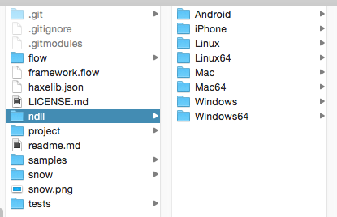
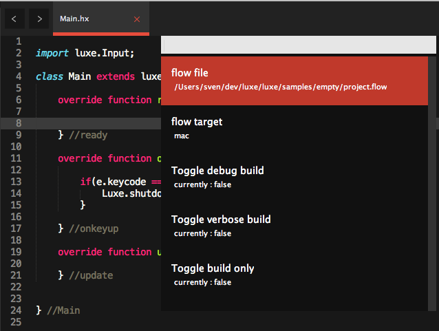

View all guides
Setting up
Step 1: Make sure Haxe is installed

Install Haxe 3.2.0+
luxe uses a modern, high level programming language
and cross platform toolkit called Haxe.
Step 2: Make sure git is correctly installed
luxe is hosted on Github.com
To use the alpha of luxe, you must have git installed.
If you don’t have git installed, there are some instructions below.
Step 3: Install luxe
luxe uses flow to build,
and snow to access the platforms.
Using haxelib git to install
Once you have git installed, you can use haxelib to install the libraries.
Simply run the following commands:
haxelib git flow https://github.com/underscorediscovery/flow.git
haxelib git snow https://github.com/underscorediscovery/snow.git
haxelib git luxe https://github.com/underscorediscovery/luxe.git
Optional: Manually cloning
If you clone the repositories manually, tell haxelib where to find the clone.
haxelib dev <library> <path/to/library>
Test if setup is correct
The simplest way to test is to run a test case for the web target.
To find out where haxelib put the luxe code, run haxelib path luxe.
To run the test:
cd /path/to/luxe/tests/features/draw/haxelib run flow run web
You should see something similar to this open in your browser

What’s next?
Once everything is set up, there are further steps for working with luxe.
- You can and should set up IDE/Editor support.
- Setup native platforms (mac/windows/linux/ios/android), go to step 4.
Additionally,
- Always visit http://snowkit.org for the latest news and user posts.
- You can follow news on http://twitter.com/snowkitorg
- You can join the community chat http://snowkit.org/chat
- You can view the user guides
- You can see the “awesome-snowkit” respository for resources.
- Additional help and information
Step 4: Setup Native targets
Step 4.1 - Install C++
To build the native targets, you must have c++ installed.
- Windows : Visual C++ 2013
- Linux : GCC/G++
- Mac : Xcode (and command line tools)
- iOS : Xcode, iOS SDK (comes with xcode)
- Android : Android SDK, Android NDK, Continued setup
Step 4.2 - Download the snow prebuilt binary
snow is the underlying framework that handles the platform specifics for luxe.
Since snow interacts with the platform, it has prebuilt c++ components.
These prebuilt binaries are compiled by an automated build server,
and currently, need to be copied manually into your snow folder.
Download the prebuilt files for your target platforms here:
http://build.luxeengine.com/snow
- Find out where snow is stored by running
haxelib path snow. - Copy the contents of the zip file into the
<snow root>/ndll/folder. - For history and details, read this dev log.
It should look like this (note: mine includes all platforms inside the ndll folder,
you only need the ones for the targets that you are using currently).

Step 5: Editor Setup
Sublime text
When using the sublime text plugin provided by the build tools, you get project management, building and running, and full code completion within sublime text.
Read the sublime text setup docs.

Atom
Building, code completion, error linting, go to definition and more.
http://atom.io support is hosted by atom package manager.
For details and instructions, visit the links below. You need both flow and haxe packages for using luxe.
http://atom.io/packages/haxe http://atom.io/packages/flow

Flash develop
When using the flash develop template provided, you also get project management, building and running, and full code completion.
The FD template is located at snowkit-fd,
and here is a direct Download link
Be sure to read the setup guide!
Read the flash develop setup docs.
Appendix A: Installing git
Windows
Pick one of these options :
- Install Github for Windows. This is easiest.
- Install cli msysgit. Make sure git is in your PATH.
- Install cmder. The full download includes git.
Mac
Check if you have git already, by running git --version from Terminal.app.
Install from homebrew
- Install homebrew if you haven’t
- From
Terminal.apprunbrew install git
Install via Github for Mac
- Install Github for Mac
- Run the app, in the menu choose Preferences -> Advanced -> Install command line tools
Linux
This varies wildly by distro, use your favourite package manager or install process.
For example, on ubuntu 12+ you could use sudo apt-get install git-core.
Continue to the user guides
Back to the index